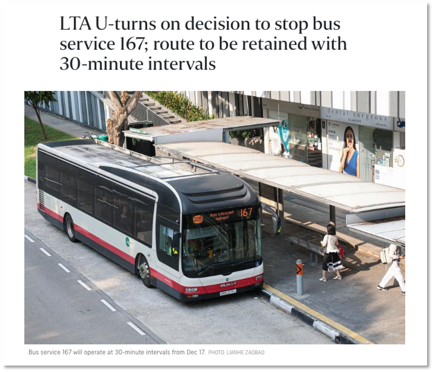
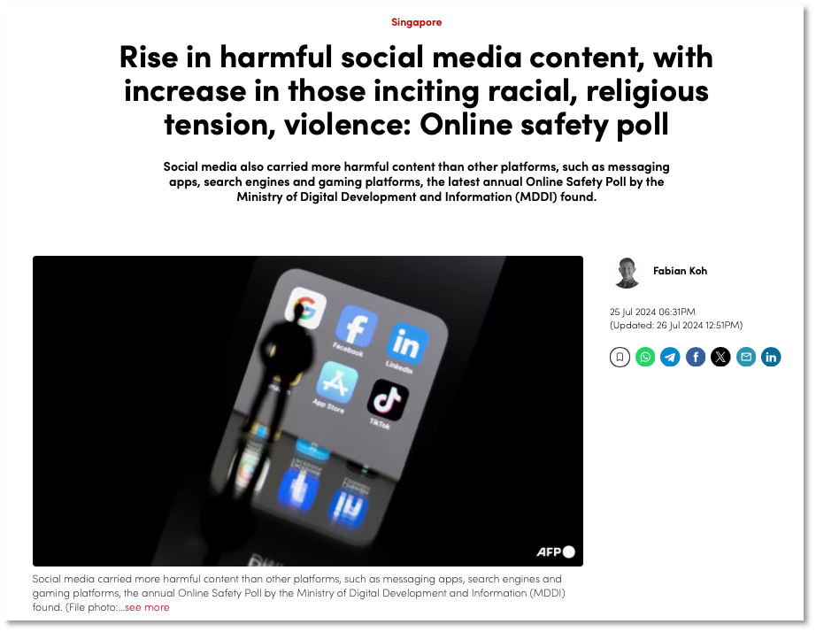

Course Description
Interested in applying your data science skills for the public good? In this course, we will examine how data science and machine learning can be used to inform government policymaking and enhance service delivery. We start with an overview of Singapore's public sector and the range of policy issues Singapore grapples with, before focusing on specific case studies to understand how data science works in practice. You will also have the chance to sharpen your skills in data visualisation, technical communication, and other data science skills. The course culminates in a group project focused on applying data science to specific public sector use cases, ranging from geospatial data analysis to natural language processing. Join us on an exciting journey of learning how to use data science for the public good!
Note: This course was taught in AY2024/25 Semester 1 at NUS and has now been completed.
Group Project: Problem 1 (Geospatial Data)
Shortlisting bus routes for rerouting
 You are a team of data scientists in MOT, focusing specifically on public transportation policies and implementation. You have been tasked to do a comprehensive analysis of all bus routes that are parallel to MRT lines - specifically you need to assess which bus services are worth reviewing for potential service changes.Comprehensive Analysis of Parallel Bus Routes to MRT Lines for Service Optimisations
Choo Jin Yi, Lian Ko-Shyan, Jiya Dutta, Kang Yuting, Toh Kai Lin
Geospatial Analysis of Bus Services against Train Lines
Krystal Low, Lily Rozana Joehann Aung, Eliza Ong, Wong Fang Ting
Parallel Bus Routes to MRT Lines
Loo Ying Gene, Aiko Liana Amran, Alicia Ong Ching Ern, Ramasamy Shreya
Group Project: Problem 2 (Text Data)
Analysing toxicity in online discourse
 You are a team of data scientists at MDDI, focusing specifically on online trust and safety. You have an internal dataset of Reddit comments on Singapore-related subreddits. You have been tasked to do a comprehensive analysis of Reddit data to assess whether and why the topics and comments have become more hateful and toxic over the past few years.Reddit Hate/Toxicity Analysis
Wee Wei Kit Glenn, Bae Soo Youn, Muhammad Irfan B Salleh, Ethan Low Zhi Kai, Wong Si Yuan
Online Safety in Social Media
Wang Tingyu Kelly, Duangporn Sirikulwattananon, Jessica Widyawati, Eu Shae-Anne, Tiffany Irene Prasetio
Singapore Subreddits Toxicity Analysis
Yang Shu Ting, Cao Han, Su Xuanxuan, Bernice Ong Hwee Wee, Luo Xinming